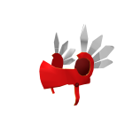

TUDO SOBRE O DESENVOLVIMENTO ROBLOX EM UM SÓ LUGAR
HISTÓRIA DAS VALKYRIES
Os valkyrie Helms são provavelmente a série de itens mais cobiçadas pelos jogadores e pela comunidade de trocas. Originalmente lançados em 2008, esses itens são fácilmente reconhecíveis, desejados e também é possível encontrar pessoas utilizando-os com frequência em jogos de trocas. No total, existem 10 valkyries diferentes. Elas serão listadas de acordo com sua raridade.
Festive Sword Valkyrie
Foi lançada em 10/12/2014 como parte do evento de natal daquele ano. Para consegui-la, o jogador precisava ganhar 10 rounds no jogo "Sword Fighting Tournament". Caso você fosse habilidoso(a) em lutas com espadas, seria um item fácil de conseguir, caso contrario, você poderia pedir ajuda de amigos. O evento durou cerca de 14 dias e 88.526 cópias foram distribuidas e dessas, sobram 73.542 disponíveis. Por não ser um item limitado, não é possivel trocar ou vender essa valkyrie.
Valkyrie Helm
Lançada no dia 26/01/2008 e foi a primeira valkyrie a ser lançada. Ela foi inspirada nos elmos das valquírias da mitologia nórdica. Seu prço origial era 30.000 tickets(2.000-7.000 robux), no total existem 12.228 cópias e dessas, apenas 7591 sobram atualmente. A Valkyrie Helm se tornou limitada na Memorial Day Sale em maio de 2013. Atualmente, ela é vendia por 50.000 - 70.000 robux, é o 11º item com maior número de favoritos do Roblox e foi criado por Clockwork.
Redvalk

Lançada no dia 15/11/2018, é um ToyCode da quinta série de brinquedos do Roblox que passou a ser vendida no começo de 2019 nos Estados Unidos. Os brinquedos do Roblox vem com um código que da algum item especial, como um promocode, a Redvalk é um código bônus e pode ser encontrada aleatoriamente em qualquer brinquedo da série 5 de Ação ou série 3 de Celebridades. Existem 3594 cópias e apenas 1502 disponíveis. A Redvalk não é um item lmitado.
Violet Valkyrie
Lançada dia 19/02/2018 durante a President's Day Sale daquele ano. Atualmente 1253 cópias foram vendidas e apenas 670 estão disponíveis. Muitos consideramessa valkyrie um desperdício, pois ela não é limitada e é possível conseguir a Valkyrie Helm por um preço semelhante
Blackvalk
Lançada no dia 04/07/2013 e foi a segunda versão criada da Valkyrie Helm, inicialmente ela era vendia por 1.000.000 de tickets(70.000 - 100.000 robux). Apenas 265 foram vendidas e apenas 128 estão disponíveis. A Blackvalk virou limitada durante a Memorial Day Sale em maio de 2015, seu valor de troca é de 1.500.000 Robux.
Tixvalk
Foi lançada em 20/03/2016 para fazer parte do evento de remoção dos tickets, seu destaquesão os tickets que fazem o papelde penas nas outras valkyries. Originalmente, ela custava 500.000 tickets e ficoua venda por 1 mês. Apenas 131 cópias foram vendidas e dessas apenas 94 sobram hoje, não é um item limitado e é uma das valkyries mais esquecidas.
Sparkle Time Valkyrie
Lançado dia 19/11/2017, durante a Black Fryday Sale daquele ano. Originalmente foi vendida por 250.000 Robux como Limited U e apenas 94 cópias foram vendidas e dessas, apenas 91 sobram hoje. Esse item foi muito criticado pela comunidade, já que era apenas uma versão Sparkle Time da original e só isso fez com que o preço origial fosse extremamente alto. Atualmente ela pode ser comprada por aproximadamente 500.000 Robux.
Summer Valk
E em terceiro lugar, a Summer Valk, lançada dia 31/08/2019, como parte da Neighbour Day Sale daquele ano. Muitos esperavam que fosse um limitado, mas é um item normal que custa 25.000 Robux.
Emerald Valkyrie
Em segundo lugar está a Emerald Valkyrie, lançada dia 18/02/2019 como parte da President's Day Sale daquele ano. Originalmente foi vendida como um Limited U por 45.000 Robux e tinha um estoque de apenas 50, que se esgotou em apenas 23 segundos, destas, apenas 31 sobram hoje. Seu valor de troca atualemnte é cerca de 900.000 Robux. Essa é a Valkyrie limitada mais rara.
Sinister Valk
E finalmente, em primeiro lugar, está a Sinister Valk, foi criada dia 11/01/2019 e apenas uma única pessoa possui ela. Ela é uma retextura da Festive Sword Valkyrie e foi dada para o usuário acul_gamer123 pela fundação Make-a-Wish, uma instituição americana sem fins lucrativos que visa realizar desejos de crianças com doenças críticas, como câncer, por exemplo.
Quer aprender mais?
O canal SLEGHART é um bom canal para aqueles que querem aprender sobre:
.png)
.png)